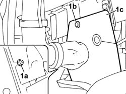

7055B65 ENGINGE BAY DUSTGUARD PROTECTION IN LEFT FRONT WHEEL ARCH R R
- Path
- Procedures > 70 FITTINGS > 7055 MOULDINGS ON PROTECTIONS > 7055B EXTERIOR PROTECTIONS > 7055B65 ENGINGE BAY DUSTGUARD PROTECTION IN LEFT FRONT WHEEL ARCH R R
- Kind
- repair procedure (removal / refitting; the operation number is the code)
- Applies to
- all engines; all production periods
- Interactive page
- https://sloeber94.github.io/elrnDB-fUlss/en/#/179007932
Applies to: engines: 3.0 24V V6; all production periods
 Removing
Removing
 Refitting
RefittingPosition the vehicle on a lift.
Op. 5010B18 CLIMATE CONTROL UNIT AIR INTAKE - R.R.
Op. 4450B02 LEFT FRONT WHEEL R R
Op. 7055B90 LEFT FRONT WHEEL ARCH LINER - R.R.
1. Undo nut (1a), prise up press-fitted stud (1b) and remove dust protection (1c).

Applies to: engines: 3.0 24V V6; all production periods
Refitting
RemovingPosition the dust protection, tighten the nut and press-fit the studs.
Op. 7055B90 LEFT FRONT WHEEL ARCH LINER - R.R.
Op. 4450B02 LEFT FRONT WHEEL R R
Op. 5010B18 CLIMATE CONTROL UNIT AIR INTAKE - R.R.
Remove the vehicle from the lift.
Topics linked from this page (3)
- 4450B02 LEFT FRONT WHEEL R R
- 5010B18 CLIMATE CONTROL UNIT AIR INTAKE - R.R.
- 7055B90 LEFT FRONT WHEEL ARCH LINER - R.R.